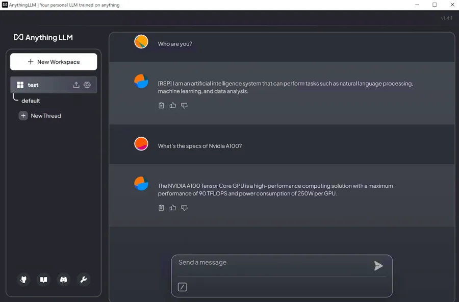
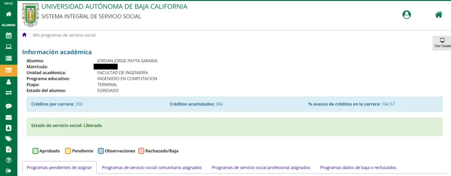
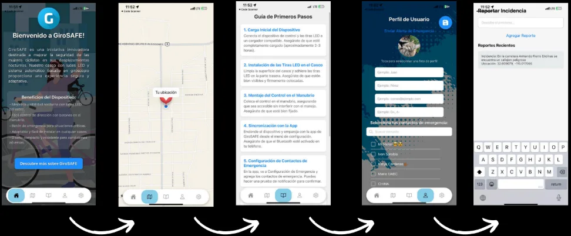
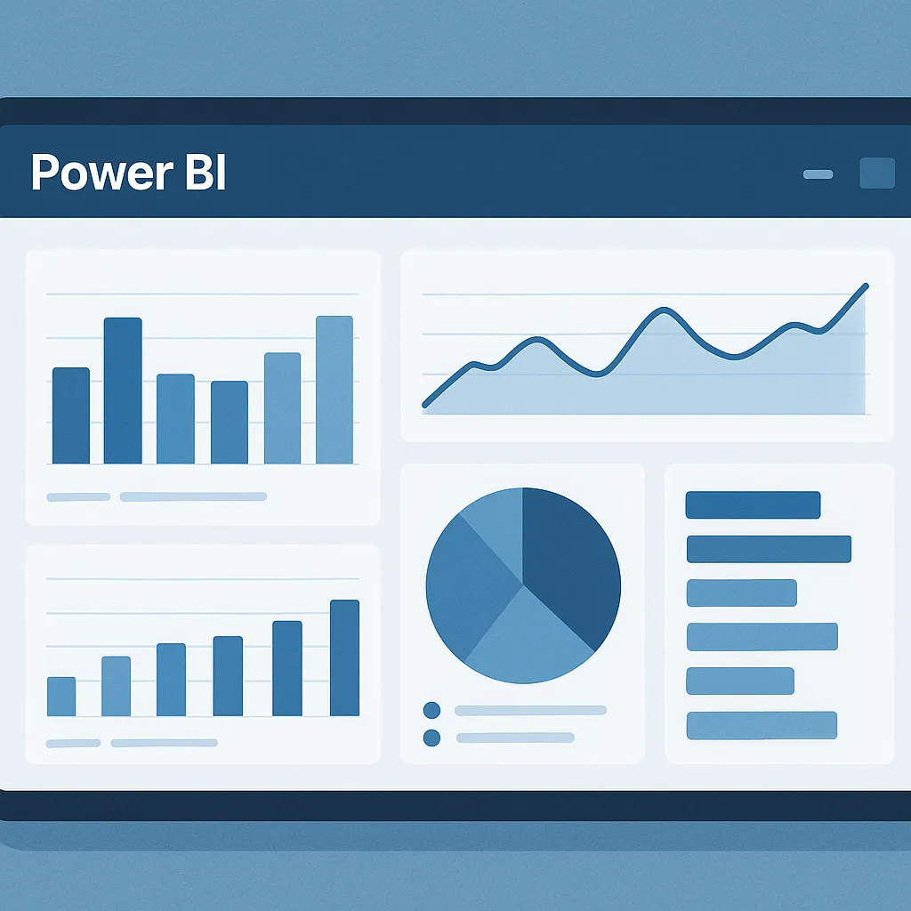
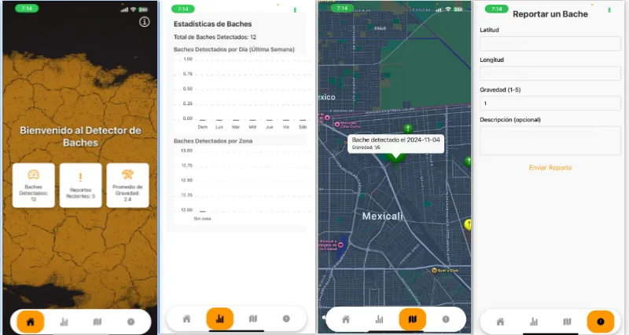

Implementación de soluciones de inteligencia artificial para automatizar procesos internos utilizando Python, AnythingLLM y Ollama.
Desarrollo de interfaz de usuario moderna y responsiva con migración de framework W3.CSS a Bootstrap para mejor escalabilidad.

Plataforma web desarrollada con Flask para facilitar la búsqueda y consulta de información académica con bases de datos relacionales.

Desarrollo de soluciones con microcontroladores utilizando FreeRTOS, Espressif y Arduino para aplicaciones IoT.

Herramientas de análisis de datos para identificar patrones y tendencias, optimizando procesos internos.

Desarrollo de aplicación móvil multiplataforma con React Native y Node.js para gestión de datos en tiempo real.